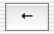

The arrow key on the EdenMath interface allows the user to take back multiple previous operations. This is possible by the Undo Manager provided by Cocoa.
Here is the code which will be in the EMController.m file.
// -------------------------------------------------------
// (void) undoAction
// -------------------------------------------------------
- (void)undoAction:(id)sender
{
if ([undoManager canUndo])
{
[undoManager undo];
}
}
// -------------------------------------------------------
// (NSUndoManager *) windowWillReturnUndoManager:(NSWindow *)sender
// -------------------------------------------------------
- (NSUndoManager *)windowWillReturnUndoManager:(NSWindow *)sender
{
return undoManager;
}
Notice that in the init and dealloc function, there are these two lines of code:
undoManager = [[NSUndoManager alloc] init];
[undoManager release];
Since space is specifically allocated for the Undo Manager, it also needs to be deallocated when the program closes.
CTRL+click and drag a connection from the arrow button to the EMController, and connect to the undoAction: function (which should be added first if it hasn't already).
There is no code in the EMResponder files which is associated with the Undo Manager.
The Undo and Redo menu items in the Edit menu are already connected to the functions undo: and redo: which lay within the FirstResponder's responsibilities.